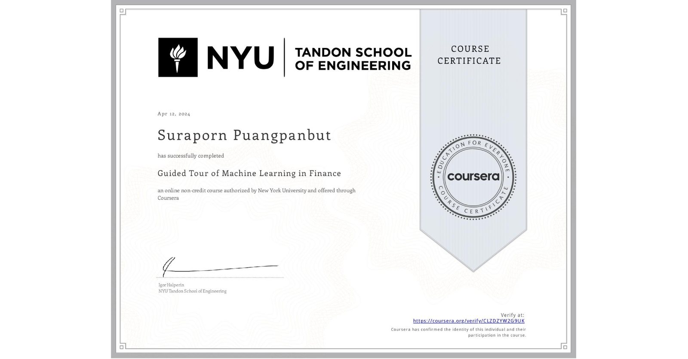
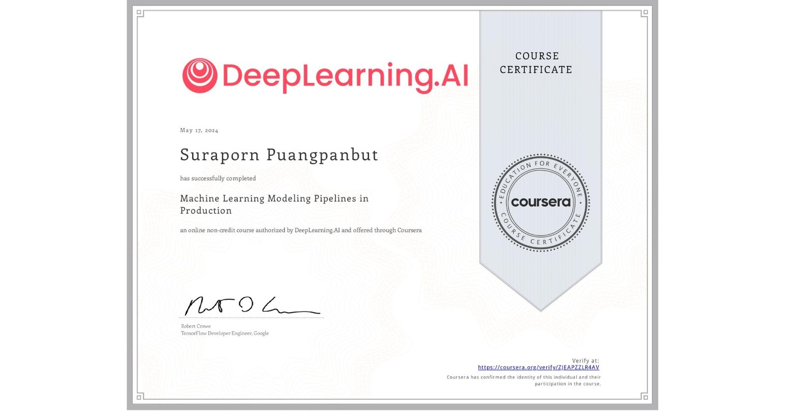
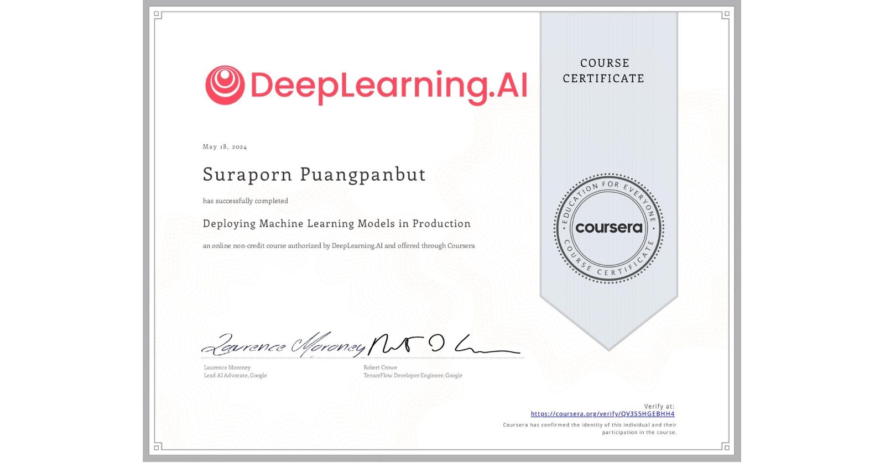

Trading systems that are tested hard before they trade.
I'm a quantitative researcher and data scientist with 10+ years of experience in machine learning, statistical modeling and optimization. I design, backtest and run algorithmic trading systems end to end, from a tick-level research engine in Python to a live MQL5 system, and I use agentic AI workflows to move from idea to tested result quickly.
QuadBreak
My main project: a systematic multi-strategy trading system for gold (XAUUSD).
Nine independent strategies run as one portfolio, with position sizing that scales down when recent portfolio volatility rises. Every strategy and rule was researched on a tick-level engine I built in Python, and had to pass the same out-of-sample tests before it went in. Strategy logic and parameters are kept private.
| Period | Avg. monthly growth | Max drawdown |
|---|---|---|
| 2025 out-of-sample | ||
| Jan–Jun 2026 training | ||
| Jul–Nov 2026 out-of-sample |
| Profile | Risk per strategy | Avg. monthly growth | Max drawdown | Worst-case drawdown | Sharpe | Calmar | $1,000 grows to |
|---|
Everything else on this panel shows High, QuadBreak's live setting. Low and Medium are scaled in hindsight so the full-period max drawdown lands near 10% and 20%. Worst-case drawdown is the highest of the four cost conditions.
R-multiples measure each strategy's signal quality independent of position size, so this table is the same for every risk profile. Strategy names and rules are kept private.
v1.60, simulated on 151M+ ticks from Jan 2025 to Nov 12, 2026, starting from $1,000. Stats use the raw-spread condition, the weakest of four tested. Sharpe and Sortino are annualized from daily returns. Calmar is the annualized compound return divided by max drawdown, and it's large because gains compound monthly. These are backtest results, not live performance, and simulated results don't guarantee future returns.
Alfred
My second system: a standalone day-trading EA for gold that runs alongside QuadBreak.
Alfred takes at most one trade a day. Its stop, profit lock and end-of-day exit are managed automatically, and it trades smaller on days with below-usual market activity. It went through the same research pipeline and cost battery as QuadBreak, and runs as a separate EA because it overlaps QuadBreak's breakout strategies. Both are sized on their combined drawdown. Method and parameters are kept private.
Settings: 1% of balance per trade (×0.25 on quiet days); recovery sizing ×1.5 up to 2 steps; profit lock at +3R. Compounding.
| Period | Gain / month | Max drawdown | Sharpe | $1,000 becomes |
|---|---|---|---|---|
| 2025 | 4.2% | 19.1% | 1.58 | $1,638 |
| Jan–Jun 2026 | 11.0% | 10.5% | 4.11 | $1,863 |
| Jul–Nov 2026 | 16.5% | 8.3% | 3.48 | $1,959 |
| Whole period (23 months) | 8.4% | 19.1% | 2.65 | $6,114 |
Worst of the 4 conditions: 2025 3.9% a month (21.6% max drawdown), Jan–Jun 2026 9.4% (11.1%), Jul–Nov 2026 15.3% (8.7%), whole period 7.5% (21.6%).
These are backtest results for Alfred v1.02 on tick data from Jan 2025 to Nov 12, 2026, with compounding at the settings above, not live performance; they were also reproduced in the MT5 Strategy Tester. Headline and period figures are the median of 4 cost/delay conditions; profitable months and the charts use the normal-cost condition. Sharpe and Sortino are annualized from daily returns. Live forward-test results will be added separately once there is enough history. Simulated results don't guarantee future returns.
How every idea is tested
The same pipeline for every idea, with pass/fail rules written down before the test data is looked at. Most ideas don't survive it.
Pre-register
Write the hypothesis, what will change, and the pass/fail rules before testing.
Fit on training data only
Choose settings on Jan–Jun 2026. The test periods stay untouched.
12-condition stress battery
Three periods × four conditions: fixed and raw spreads, and 1- and 5-minute execution delays.
Out-of-sample check
Must hold up on 2025 and Jul–Nov 2026, the two periods it never saw.
Lookahead & twin tests
Check that no future data leaks in, and that results beat randomized "twin" versions of the same idea.
Independent re-implementation
Code it a second time, separately, and confirm both produce the same signals.
Portfolio test
Add it to the live portfolio and compare at matched drawdown. It must improve the whole, not just itself.
MQL5, tester, live
Implement in the EA, verify in the MT5 tester, then forward-test on a live account.
What the research looks like
A week of research logged in the experiment register, Nov 11–17, 2026.
Agentic AI research workflow
How I run research at this pace.
LLM coding agents do the legwork
I direct LLM coding agents to implement each hypothesis in the research engine, run the full test battery, write the reports and update the experiment log. The pass/fail rules are fixed in the pre-registration, so the agents can't move the goalposts after seeing results.
That is how 96 fully documented experiments fit into a single week.
The research stack
Data: 151M+ XAUUSD ticks (Dukascopy), Jan 2025 – Nov 2026, converted to a fast NumPy tick store and 1-minute bars.
Engine: a Python tick-level simulator with stops, targets, trailing exits, breakeven, pyramiding and session rules. The research codebase is 219 scripts, about 10,000 lines.
Execution: MQL5 expert advisors in MetaTrader 5, running on a Windows VPS across multiple accounts.
Projects
Research beyond QuadBreak and Alfred, plus quant-relevant work from my roles and studies.
Trading research
Auditing 19 popular trading methods
I put 19 widely shared methods through the same pre-registered battery as my own ideas. They included ICT and fair-value-gap setups, supply-and-demand zones, market structure, Turtle rules, Heikin Ashi, volume profile and several paid-indicator proxies.
Testing whether regimes can be traded
I tested four ways to detect market regimes: a Gaussian hidden Markov model, Bayesian online change-point detection, trend/range votes (ADX, efficiency ratio, choppiness) and tick-volume confirmation.
Weighting a multi-strategy portfolio
I compared HERC, NCO, inverse-volatility, momentum, Sharpe and performance-based weights, plus pause rules, against equal weighting, all at matched drawdown.
Profit-withdrawal policy simulation
I simulated four monthly withdrawal policies across 23 months of tick data, to plan how much profit to take out of a live account instead of compounding indefinitely.
Other expert advisors in production
I've built and run other MQL5 expert advisors for gold, including GridFollowHedge and WealthTrade. They have on-chart control panels, equity kill switches, spread protection and trading-window rules.
Industry quant work
Forecasting non-stationary signals
I built time-series and ML forecasting models (Random Forest, XGBoost, LightGBM, CatBoost) for highly non-stationary demand and price signals, with regime detection and drift detection to keep them reliable.
Automated research & backtesting pipelines
I built automated research, backtesting and evaluation pipelines in Python to measure forecast accuracy, scenario outcomes and downstream decision impact.
Commodity price forecasting
I forecast olefins raw-material and product prices such as Brent crude, naphtha, propane and benzene up to 3 months ahead, using time-series and ML models with LIME to explain each prediction.
Supply-chain optimization
I designed and solved supply-chain optimization models as mixed-integer nonlinear programs (MINLP) in Gurobi.
LLM evaluation and benchmarking
I evaluate and improve ML/LLM-powered analytics models and a business chatbot at Meta (via Tundra), and I evaluated LLM-based search systems at TELUS, through benchmarking and edge-case analysis.
Academic
EPL Ranking with Bayesian Inference
I rated Premier League teams' skills and forecast the final table with a Bayesian model. Read the write-up ↗
The Price is Right
A full-time capstone with Olyns (Santa Clara, USA). I analyzed how recycling users behave, built demand-forecasting models and designed a surge-pricing algorithm.
Experience
Quant-relevant highlights. Full details are in the résumé and my data science portfolio.
Data Analyst
- Develop and evaluate ML/LLM-powered analytics models through prompt refinement, benchmarking and performance validation.
- Improve an LLM chatbot for Business and Sales teams through structured evaluation and edge-case analysis.
Data Scientist
- Built time-series and ML forecasting models (Random Forest, XGBoost, LightGBM, CatBoost) for highly non-stationary demand and price signals, for a 2.66× improvement in risk-reward performance.
- Applied regime detection and drift detection to keep models performing as conditions changed.
- Built automated research, backtesting and evaluation pipelines in Python.
Data Analyst
- Evaluated and helped optimize large-scale LLM-based search systems.
Senior Data Scientist / Assistant Manager – Data Science
- Price and demand forecasting on non-stationary commodity indices: $1.75M/yr in savings.
- Supply-chain optimization (MINLP with Gurobi): $3M/yr in cost reductions.
- Hierarchical forecasting on automated Azure pipelines: 88% accuracy, $600K/yr saved.
- Led data science teams and end-to-end ML projects.
Skills
What I bring to a quant research team.
Quant research & trading
Agentic AI & automation
Time-series & ML
Statistics & optimization
Programming & systems
Cloud & MLOps
Education
Master of Data Science
University of British Columbia · 2022–2023
GPA 4.00 · 95 selected from 2,000+ applicants
MSc, Electrical Engineering (Systems & Modeling)
University of Southern California · 2012–2013
Bachelor of Instrumentation Engineering
KMITL, Bangkok · 2002–2006
Certifications
Quant Bootcamp
Quant CU (Quantitative Computational Finance Club), Chulalongkorn University
Guided Tour of Machine Learning in Finance
New York University
Machine Learning Engineering for Production (MLOps) Specialization
DeepLearning.AI · 4 courses
Machine Learning Operations (MLOps): Getting Started
Google Cloud
Certificates
Course completion certificates.




